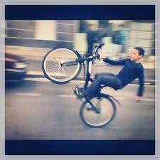

Nom: Bobo situation matrimoniale: Marié
Prénom: Eddy Enfants: 2
Date de naissance: 20/12/2028
Adresse: 5, rue de la mer Code Postal: 54822
Ville: Pompadour
Mon domaine d'intervention est la traduction en Esparento. J'ai
pratiqué cette activité lors de mon stage sur le porte-avion civile
Europa.
Loisir |
|
|  | Mes loisirs favoris sont l'escalade en coller |